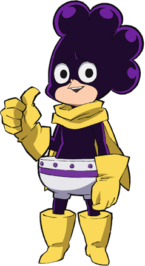

Минору Минета
Минору Минета
- Пол: ♂ Мужской
- Рост: 105 см.
- Возраст: 16
- Группа крови: ---
- Родился в: Японии
Минору Минета - студент академии Юэй, который тренируется, чтобы стать Профессиональным Героем.
Внешность
Минору - юноша карликового роста с детским лицом, тонкими бровями, большими глазами с полностью черными радужками, маленьким вздернутым носом и пухлыми щеками. На месте волос у него растут 4 темно-фиолетовых шарика, в целом напоминающие прическу "Ирокез".

Его геройский костюм очень прост: фиолетовая рубашка, брюки и маска, желтые перчатки, сапоги и плащ. Брюки несколько выступают вокруг талии, становясь похожими на детский подгузник.
Личность
Минору — пошляк и извращенец до мозга костей, что сильно портит отношение к нему у девушек и некоторых парней, которые считают его поведение слишком развратным. Он очень часто отвлекается на различные пошлости даже в момент угрозы для собственной жизни. Решительность и упорство парня многократно возрастает в те моменты, когда он пытается подглядеть за своими одноклассницами, что обычно приводит к болезненным результатам. Слава и женщины — его главная мотивация на пути становления героем, чего он, к слову, ни капли не стесняется.
Помимо этого Минору может быть лицемером и грубияном, особенно в моменты, когда он обвиняет кого-то в излишней развращённости или когда озвучивает свои мысли, совершенно не задумываясь о том, что они могут кого-то обидеть.
Он крайне легко поддается панике в опасные для жизни моменты, поддаваясь истерике. Обычно в такие моменты он перебарщивает с использованием своей причуды, что приводит к сильному кровотечению его головы. В целом Минору слабый боец, который начнёт убегать при виде опасности. Тем не менее, иногда он может взять в себя в руки перед лицом опасности.
Минору довольно умный студент, находящийся в первой десятке 1-А класса по оценкам, несмотря на то, что большинство одноклассников считают его балбесом.
Причуда
 Волосы-виноград: Причуда Минору позволяет ему отращивать на голове очень липкие шарики, эффекту которых не подвержен лишь он сам. Сила, время действия и липкость зависит от состояния пользователя. Однако, злоупотребление причудой вызывает обильное кровотечение из его головы.
Волосы-виноград: Причуда Минору позволяет ему отращивать на голове очень липкие шарики, эффекту которых не подвержен лишь он сам. Сила, время действия и липкость зависит от состояния пользователя. Однако, злоупотребление причудой вызывает обильное кровотечение из его головы.